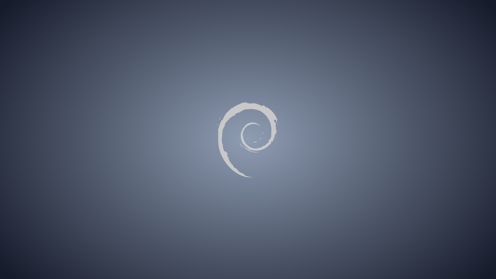
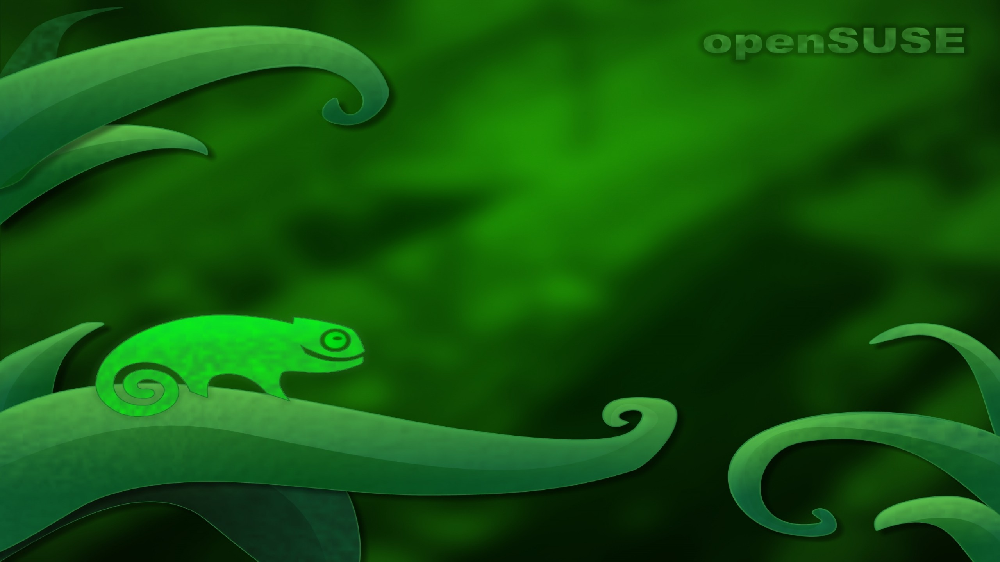

Что такое дистрибутив Linux?
Дистрибутивом называют набор программ и приложений для решения разнообразных пользовательских задач. Все составляющие дистрибутива объединены в единое целое системами инсталляции, управления, настройки и поддержки.
Наиболее распространенные дистрибутивы Linux
(Значки кликабельны)
| Linux Mint
X
<
>
Linux MintLinux Mint — универсальная система, прекрасно подходящая как для настольных компьютеров, так и для мощных ноутбуков. Ее часто называют Mac OS X в мире Linux. Перейти на сайт Linux Mint |
Fedora
X
<
>
FedoraFedora — это отточенная, легкая в использовании операционная система для переносных и настольных компьютеров с полным набором инструментов для разработчиков и производителей всех видов. Перейти на сайт Fedora |
Debian
X
<
>

Debian"Проект Debian — это ассоциация людей, общим делом которых является создание свободной операционной системы. Созданная нами операционная система называется Debian." Перейти на сайт Debian |
 Ubuntu
X
<
>
UbuntuUbuntu — это разрабатываемая сообществом, основанная на ядре Linux операционная система, которая идеально подходит для использования на персональных компьютерах, ноутбуках и серверах. Перейти на сайт Ubuntu |
OpenSUSE
X
<
>

openSUSEПроект openSUSE — это попытка сделать использование Linux повсеместным. openSUSE создает лучший в мире дистрибутив Linux, работая вместе открыто, прозрачно и дружелюбно как часть мирового сообщества свободного и открытого программного обеспечения. Перейти на сайт openSUSE |
Графический интерфейс или среда рабочего стола Linux
Одна из особенностей таких ОС как Linux в том, что вы можете в любой момент переключиться на любую понравившуюся вам среду рабочего стола, а их хватает. И это означает, что вы можете кастомизировать ваш ПК так-как вам хочется.
Среда рабочего стола Linux — это комплексная готовая к работе оболочка. Как правило она включает в себя панель задач, функциональные меню, менеджер входа в систему, программы настройки, базовые программы и другие функциональные элементы, включая оконный менеджер.
Оконный менеджер Linux — это программа, которая занимается отрисовкой окон, позволяет перемещать и изменять размер окна, обрабатывает действия пользователя, которые он делает в окне программы. Оконный менеджер может работать независимо или быть в составе среды рабочего стола.